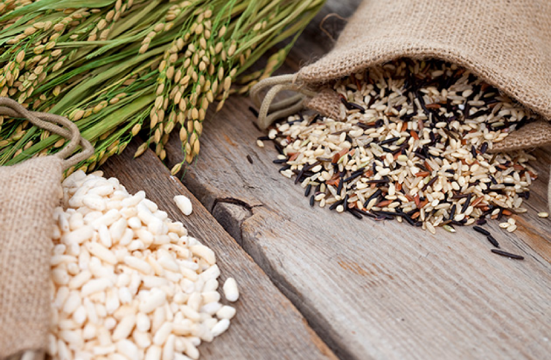
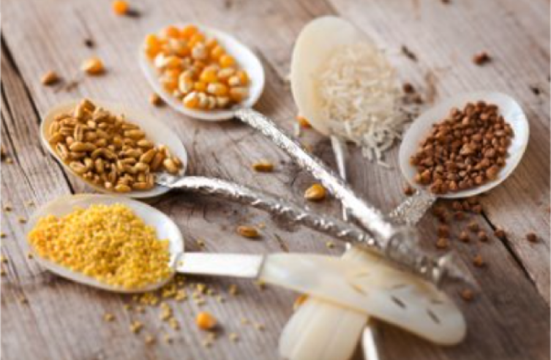

Cereal & Nutrition
Cereal & Nutrition
씨앗에서 식탁까지
-

“켈로그가 알려주는 진짜 시리얼에 대한 모든 것” 세계 최대 시리얼 기업인 켈로그는 지난 114년간 쌓아온 깊은 역사와 노하우를 바탕으로 시리얼에 대한 잘못된 인식을 바로잡고자 시리얼이 지닌 간편함을 뛰어넘는 영양적인 가치를 전달하고자 합니다.
켈로그의 ‘씨앗에서 식탁까지’는 엄선한 곡물을 찌고 구워 소비자들의 식탁에 진정한 한끼 식사로 오르기까지 시리얼의 리얼한 여정입니다. -

한 알의 곡물 씨앗을 고르기 위해 농부들과 협력을 하고, 정성이 가득한 한 줌의 곡물을 우리 몸이 필요로 하는 비타민, 미네랄 등 다양한 영양 성분을 담아 다양한 시리얼 제품으로 탄생시키는 과정이지요. 켈로그의 시리얼 제품은 여러분의 주방에서 음식을 조리하는 것과 동일한 방식으로 만들어집니다.
단지 그 규모와 양이 조금 더 크다는 것뿐이지요!
한 줌의 곡물이 맛있는 식사가 되고, 농장에서 여러분의 식탁으로 전달되기까지
맛있고 건강한 시리얼 한 스푼을 위해 켈로그는 항상 최선의 노력을 다하겠습니다.